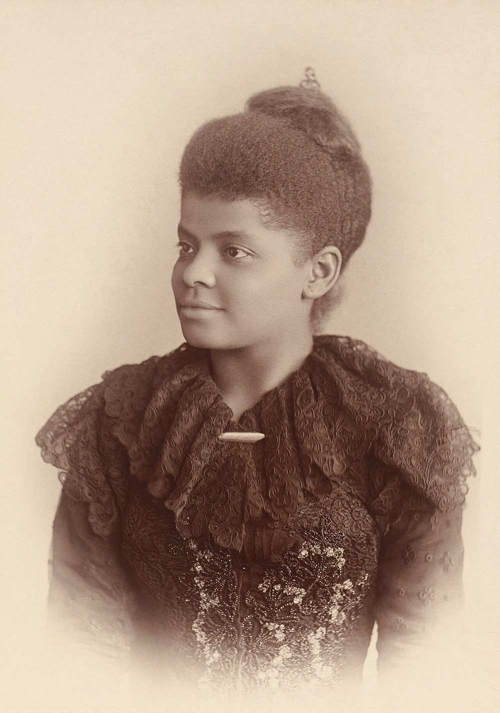
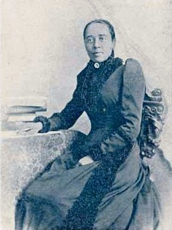
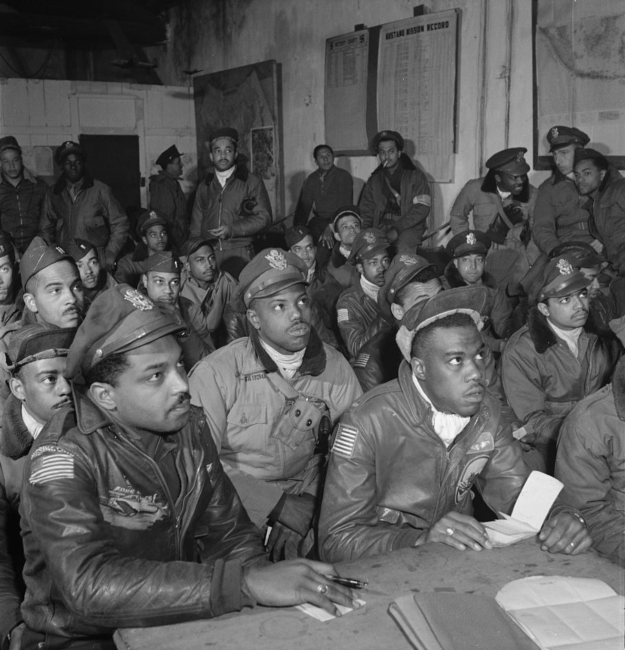
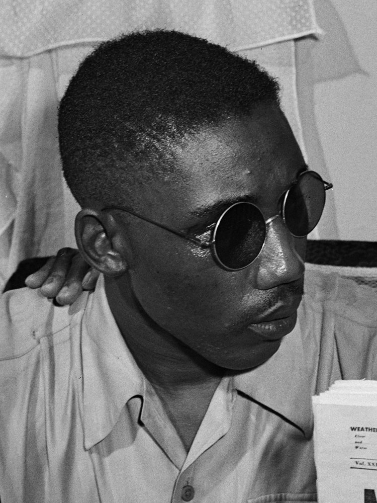
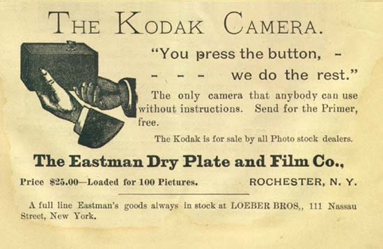
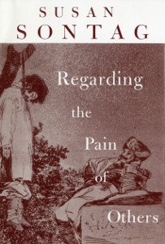

德州巴黎市（Paris, Texas），1893 年 2 月 1 日：數千人聚集觀看 Henry Smith 被處死。台上的牌子寫着 JUSTICE（正義）。
種族暴力
Racial Violence
“Racial violence is modern.” CHI 4335 · Week 12 · Racial Violence Grace Elizabeth Hale, “Deadly Amusements” (1998) Frantz Fanon, “The Lived Experience of the Black Man” (1952) Susan Sontag, Regarding the Pain of Others (2003)
Frederick Douglass（約 1879）。1838 年逃離奴隸制，1845 年出版自傳。
Very soon after I went to live with Mr. and Mrs. Auld, she very kindly commenced to teach me the A, B, C. … Just at this point of my progress, Mr. Auld found out what was going on, and at once forbade Mrs. Auld to instruct me further, telling her, among other things, that it was unlawful, as well as unsafe, to teach a slave to read. … “It would forever unfit him to be a slave.” … From that moment, I understood the pathway from slavery to freedom.
· 1949 年 James Baldwin 批評這部小說：湯姆被寫成溫順的聖徒，失去了真實的人性。
黑人的故事，由誰來寫？
南北戰爭與重建
南北戰爭（1861–1865）。紅：南方邦聯；深藍：北方聯邦；淺藍：留在聯邦的蓄奴州；灰：領地。
〈第一次投票〉（A. R. Waud，1867）第一批黑人國會議員（Currier & Ives，1872）
1865
南北戰爭結束。憲法第十三修正案廢除奴隸制，四百萬人獲得自由。
1865–77
「重建」時期：聯邦軍隊駐守南方，黑人男子獲得投票權，進入州議會和國會。
1877
聯邦軍隊撤出南方，白人重新掌握各州政權。
戰後的摩擦：進步引來的敵意

Ida B. Wells（約 1893）
Yet advancement seemed only to antagonize whites. … Many contributors to a volume of Atlanta University’s sociological studies… expressed the view that “the Negro’s ignorance, superstition, vice and poverty do not disturb and unnerve his enemies so much as his rapid strides upward and onward.”
密西西比州（Mississippi）Belzoni 的戲院，1939：黑人觀眾走外面的樓梯上樓座，樓下的門寫着「WHITE MEN ONLY」。
And whites responded to this increasing diversity and this rising black middle class with fear, violent reprisals, and state legislation—their floundering attempts to build a new racial order. Whites created the culture of segregation in large part to counter black success, to make a myth of absolute racial difference, to stop the rising.
電車總站的「有色人種」飲水處，奧克拉荷馬城（Oklahoma City），1939（Russell Lee 攝）
· 「白人專用」「有色人種」：火車、候車室、飲水處、戲院。種族成了空間的問題。
· 學校：黑人孩子只能上經費少得多的黑人學校，南方很多縣根本沒有黑人中學。
· 矛盾：隔離也造出了黑人自己的醫生、大學和商業街。
· 私刑否認任何空間屬於黑人，連黑人的身體也可以被侵入（Hale, 229）。
「我屬於哪一類？」

Anna Julia Cooper，《南方之聲》（A Voice from the South，1892）卷首像。她的母親是奴隸，父親是擁有她母親的白人。
The train stopped, and she examined the small station: “I see two dingy little rooms with ‘FOR LADIES’ swinging over one and ‘FOR COLORED PEOPLE’ over the other while wondering under which head I come.” … African American women had long ago learned to see clearly despite the blur.
I am the darker brother. They send me to eat in the kitchen When company comes, But I laugh, And eat well, And grow strong. … Besides, They’ll see how beautiful I am And be ashamed—
I hear America singing, the varied carols I hear, Those of mechanics, each one singing his as it should be blithe and strong, The carpenter singing his as he measures his plank or beam, … Each singing what belongs to him or her and to none else, … Singing with open mouths their strong melodious songs.
Whitman 的合唱裏有木匠、泥水匠、船夫、鞋匠和母親，卻聽不見黑人的歌聲。Hughes 的第一句「I, too, sing America」直接回應這首詩，把「膚色較深的兄弟」寫回美國。
第二次世界大戰：回家的士兵

塔斯基吉飛行員（Tuskegee Airmen），義大利，1945：全是黑人的戰鬥機部隊

Isaac Woodard，1946
· 一百多萬黑人參軍，部隊裏仍然實行種族隔離。
· 黑人報紙發起「雙 V 運動」（1942）：在國外打敗法西斯，在國內打敗種族主義。
· 1946 年 2 月，退伍軍人 Isaac Woodard 穿着軍裝搭巴士回家，在南卡羅來納州（South Carolina）被警察打瞎了雙眼。
· 1948 年杜魯門（Harry S. Truman）總統下令軍隊廢除隔離；1954 年最高法院判決學校隔離違憲。
「種族暴力是現代的」

柯達相機廣告（1888）：「你只要按快門，其餘交給我們。」
It was a world where people who went to church some days watched or participated in the torture of their neighbors on others. … Lynchers drove cars, spectators used cameras, out-of-town visitors arrived on specially chartered excursion trains…
The invention of photography and motion pictures… as well as the construction of museums, expositions, department stores, and amusement parks emphasized visibility, the act of looking and the authority of the eye—the spectacle. … And spectacle, the power of looking, was different from narrative, the power of telling. A picture, a representation, could convey contradictions… more easily and persuasively than a carefully plotted story.
The well-choreographed spectacle opened with a chase or a jail attack… The finale consisted of frenzied souvenir gathering and display of the body and the collected parts.
And lynchings reversed the decommodification of black bodies begun with emancipation. In spectacle lynchings, blacks themselves became consumer items; the sites of their murders became new spaces of consumption.
Not infrequently more unanimity can be had on a lynching than on any other subject. Lynching tends to minimize social and class distinctions between white plantation owners and white tenants, mill owners and textile workers … This prejudice against the Negro forms a common meeting place for whites.
…it was white participation, not white agreement, that empowered lynching as modern spectacle… And participation… ranged from performing the tortures to watching the murder to looking at the pictures.
賦予私刑力量的，是白人的參與，而非白人的贊同……參與的範圍從施行酷刑，到觀看殺人，再到看照片。
Hale, 221
旁觀他人之痛苦

Susan Sontag, Regarding the Pain of Others（2003）
Being a spectator of calamities taking place in another country is a quintessential modern experience, the cumulative offering by more than a century and a half’s worth of those professional, specialized tourists known as journalists. Wars are now also living room sights and sounds.
內布拉斯加州奧馬哈（Omaha），1919 年 9 月 28 日：Will Brown 的屍體被焚燒，人群對着鏡頭擺姿勢。
Intrinsic to the perpetration of this evil is the shamelessness of photographing it. The pictures were taken as souvenirs and made, some of them, into postcards; more than a few show grinning spectators, good churchgoing citizens as most of them had to be, posing for a camera… The display of these pictures makes us spectators, too.
I wrote out a careful and reasoned statement concerning the evident facts and started down to the Atlanta Constitution office… I did not get there. On the way the news met me: Sam Hose had been lynched, and they said his knuckles were on exhibition at a grocery store farther down Mitchell Street, along the way I was walking. I turned back to the University. I began to turn aside from my work.
Mamie Till 在兒子 Emmett 的葬禮上，1955。她讓《Jet》雜誌刊登了兒子遺體的照片。
And by continuing and expanding the circulation of the stories, even anti-lynching activists’ use of lynchings as spectacle helped maintain the power of the practice as a cultural form… That they had no other option demonstrated the power of the spectacle in setting the boundaries of racial meaning.
What is the point of exhibiting these pictures? To awaken indignation? To make us feel “bad”; that is, to appall and sadden? To help us mourn? … Are we the better for seeing these images? Do they actually teach us anything? Don’t they rather just confirm what we already know (or want to know)?
出版《黑皮膚，白面具》（Peau noire, masques blancs；英譯 Black Skin, White Masks）。
1953–61
在阿爾及利亞主持精神科，加入民族解放陣線。1961 年出版《大地上的受苦者》（The Wretched of the Earth），同年死於白血病，年僅 36 歲。
白色面具：語言
對照：黑臉滑稽秀的海報（約 1900）
To speak means being able to use a certain syntax and possessing the morphology of such and such a language, but it means above all assuming a culture and bearing the weight of a civilization. … the more the black Antillean assimilates the French language, the whiter he gets—i.e., the closer he comes to becoming a true human being.
《黑皮膚，白面具》英譯本 Black Skin, White Masks（1967）封套上的 Fanon
I came into this world anxious to uncover the meaning of things, my soul desirous to be at the origin of the world, and here I am an object among other objects. … the Other fixes me with his gaze, his gestures and attitude, the same way you fix a preparation with a dye.
“Look! A Negro!” It was a passing sting. I attempted a smile. “Look! A Negro!” Absolutely. I was beginning to enjoy myself. … “Maman, look, a Negro; I’m scared!” Scared! Scared! Now they were beginning to be scared of me.
法國早餐飲品 Banania 的罐子：咧嘴笑的塞內加爾士兵說着洋涇濱法語「Y a bon」（好吃）。
I was responsible not only for my body but also for my race and my ancestors. I cast an objective gaze over myself, discovered my blackness, my ethnic features; deafened by cannibalism, backwardness, fetishism, racial stigmas, slave traders, and above all, yes, above all, the grinning Y a bon Banania.
我不僅要為我的身體負責，還要為我的種族、我的祖先負責。我用客觀的目光審視自己，發現了我的黑，我的種族特徵；食人、落後、拜物、種族烙印、奴隸販子，震聾了我的耳朵，最重要的，是的，最重要的，是那個咧嘴笑的「Y a bon Banania」。
Fanon, ch. 5（暫譯）
「從外部被過度決定」
切片機（microtome）：把組織切成薄片，放到顯微鏡下觀察
I am overdetermined from the outside. I am a slave not to the “idea” others have of me, but to my appearance. … The white gaze, the only valid one, is already dissecting me. I am fixed. Once their microtomes are sharpened, the Whites objectively cut sections of my reality.
I can’t go to the movies without encountering myself. I wait for myself. Just before the film starts, I wait for myself. Those in front of me look at me, spy on me, wait for me. A black bellhop is going to appear.


 魯迅，1906
魯迅，1906